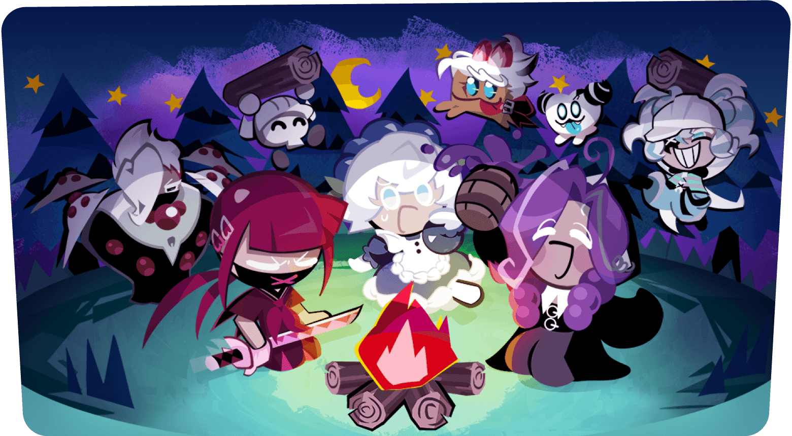

쿠키런크럼블 길드 토벌전 참여법 점수 합산 주간 시즌까지 정리해봤어요
쿠키런 크럼블 길드에 들어가 계신 분들이라면 8월 27일(목) 업데이트로 '길드 토벌전'이 열린 뒤로 길드 채팅창에 '피냐타' 얘기가 부쩍 늘었다 싶으실 텐데요. 길드원들이 다 같이 보스를 때리고 순위를 겨루는 콘텐츠인데, 저도 이 콘텐츠가 궁금해서 참여법이랑 점수 합산 방식, 지금 돌아가는 주간 시즌까지 한번 정리해봤어요. 다만 나온 지 얼마 안 된 콘텐츠라 공식에서 세세한 부분까지 다 공개하진 않았더라고요 — 확인된 건 확인됐다고, 아직 안 나온 건 그렇다고 정직하게 밝혀둘게요.
길드 토벌전이 뭔지부터 짚고 갈게요
길드 토벌전은 8월 27일 업데이트로 새로 생긴 길드 전용 콘텐츠로, 길드원들이 함께 보스 '지나치게 무거워진 피냐타'를 공략해서 각자 입힌 피해량을 점수로 합산해 길드 순위를 가리는 주간 시즌제 콘텐츠예요.
말은 좀 복잡해 보이는데 구조는 단순해요. 큰 그림부터 표로 정리해볼게요.
| 항목 | 내용 |
|---|---|
| 추가 시점 | 2026년 8월 27일(목) 업데이트 |
| 보스 | 지나치게 무거워진 피냐타 |
| 방식 | 길드원 개인 피해량 → 점수 환산 → 길드 전체 합산 |
| 시즌 길이 | 주간(1주 단위) |
| 리셋 시점 | 미확인 |

공식 사이트 모드 소개에 있는 길드 아이콘이에요. 던전·타워·아레나·크럼 스크램블·펫이랑 나란히 하나의 콘텐츠로 올라가 있어요.
이미지 출처: 쿠키런: 크럼블 공식 사이트 · 네이버 본문엔 받아서 재업로드 권장
사실 '길드'라는 모드 자체는 전부터 아이콘으로 있었어요. 그런데 그동안은 아이콘만 있고 실제로 뭘 하는 콘텐츠인지 안내가 없었거든요. 이번 업데이트로 그 빈 모드 안에 '길드 토벌전'이라는 실제 콘텐츠가 처음 채워진 셈이라, 길드 있으신 분들한테는 꽤 의미 있는 소식이에요.
그럼 이제 참여 조건부터 하나씩 뜯어볼게요.
참여는 어떻게 하나요
참여하려면 우선 길드에 가입돼 있어야 하죠 — 이름 그대로 길드 소속 유저만 들어갈 수 있는 콘텐츠거든요. 제가 확인한 기준으로는 길드 탭에서 토벌전 아이콘을 누르면 들어가더라고요.🔍 게임 내 확인 해외 매체 보도를 보면 이번 8월 27일 업데이트를 기점으로 길드 가입 자체가 사실상 필수처럼 다뤄지는 분위기더라고요. 국내 매체·공식 공지에선 이 부분을 따로 짚은 적이 없어서 100% 확정이라 하긴 조심스럽지만, 어차피 길드 토벌전을 하려면 길드가 있어야 하는 건 맞으니 아직 길드가 없으신 분들은 이 콘텐츠를 계기로 하나 챙겨두시는 게 좋을 것 같아요. 레벨 제한·하루 입장 횟수 같은 세부는 아래 표에서 정리해둘게요.
길드 탭에서 토벌전에 들어가면 뜨는 안내 화면이에요.
피해량 점수는 어떻게 합산되나요
점수는 길드원 각자가 자기 팀으로 보스에게 입힌 피해량을 게임이 점수로 바꾸고, 그 점수를 길드원 전체가 합산해서 길드 총점을 매기는 방식이에요. 그러니까 혼자 화력이 세다고 끝나는 게 아니라, 길드원들이 골고루 들어와서 조금씩이라도 피해량을 보태는 쪽이 유리한 구조예요.
- 개인전이 아니에요 — 나 혼자 화력이 세다고 순위가 오르는 게 아니라, 길드원 전체 점수 합이 중요해요.
- 매칭은 해외 매체 보도 기준으로 다섯 개 길드가 한 그룹으로 묶여서 그 그룹 안에서 순위를 겨루는 방식으로 알려져 있어요(국내에서 별도 확인은 안 됐어요).🔍 게임 내 확인
- 시즌은 주간 단위예요 — 매주 새로 도전하고 새로 순위를 매기는 구조고요.
딜을 어떻게 올리냐는 결국 조합 문제인데, 티어표 글에 정리해둔 SSR조합 참고하시면 좋아요.
보스전이 끝나면 이렇게 점수랑 순위가 뜨는 방식이에요.
보상은 뭘 주나요
보상은 크게 길드 전용 재화 하나, 그리고 그 재화로 바꾸는 교환 상점 이렇게 두 갈래로 알려져 있어요. '길드 메달'·'명예 보상'·'교환 상점'이라는 이름은 해외 매체가 쓴 영문 표기를 제가 우리말로 옮겨본 거라, 아직 국내 공식 명칭이 나오지 않아서 편의상 이렇게 부르는 거예요.
- 길드 메달 — 토벌전 참여로 쌓이는 길드 전용 재화
- 명예 보상 — 별도로 주어지는 보상으로 알려져 있어요
- 길드 메달 교환 상점 — 메달을 모아서 한정 쿠키·펫으로 바꿀 수 있는 구조
다만 이 세 가지는 해외 게임 매체(노이지픽셀 등)에서 먼저 정리한 내용이라, 정확한 수량·순위별 차등 여부는 아래 표에서 한 번에 정리해둘게요.🔍 게임 내 확인
메달을 모으면 여기서 쿠키·펫으로 바꿀 수 있어요.
확인된 것 vs 아직 확인 안 된 것
정보가 아직 다 안 나온 콘텐츠라, 지금까지 조사한 걸 표로 한 번 정리해볼게요.
| 확인된 것 | 아직 확인 안 된 것 |
|---|---|
| 보스 이름·점수 합산 구조·주간 시즌 운영 | 정확한 시즌 리셋 요일·시각 |
| 길드 가입이 참여 전제 | 정확한 하루 입장 횟수 제한 |
| 보상 종류(길드 메달·명예 보상·교환 상점, 해외 매체 기준·국내 미확인) | 순위 구간별 보상 수량·차등 여부 |
지금 챙기면 좋은 것
지금 시점에서 확실하게 챙길 수 있는 건 길드 가입, 그리고 꾸준한 참여 두 가지입니다.
- 아직 길드가 없다면 먼저 가입부터 해두기
- 콘텐츠가 열려 있는 동안 한 번씩이라도 들어가서 피해량 넣어두기 — 점수가 쌓이는 구조라 꾸준히 참여하는 쪽이 유리하다는 점 기억해두기
- 세부 보상·순위 컷은 공식에서 추가 공지가 나올 때 다시 확인하기
길드원끼리 서로 독려하면서 참여율을 챙기는 것도 방법이에요.
자주 묻는 질문
Q. 길드 토벌전 입장 횟수 제한이 있나요?
정확한 횟수는 공식에서 아직 공개하지 않았어요. 콘텐츠가 열려 있는 동안 매일 들어가서 공략하는 방식으로만 알려져 있으니, 인게임에서 직접 확인하시는 게 제일 정확합니다.
Q. 순위에 따라 보상이 달라지나요?
순위 구간별 차등 여부는 아직 미공개예요. 보상 종류(길드 메달·명예 보상·교환 상점)까지는 알려졌지만 자세한 건 위 표를 참고해주세요.
Q. 원래 있던 길드 콘텐츠랑 뭐가 다른가요?
길드 자체는 이전부터 존재하던 모드였는데, 그동안은 모드 목록에 이름·아이콘만 있고 구체적인 콘텐츠가 없었어요. 이번 업데이트로 그 자리에 처음으로 실제로 플레이할 수 있는 토벌전이 들어온 거랍니다.
쿠키런 크럼블 길드 토벌전 정리
지금 확실한 건 이 정도예요. 길드에 들어가 있으면 참여할 수 있고, 보스에게 넣은 피해량이 점수로 쌓여서 길드 전체 순위를 가르는 주간 콘텐츠라는 것까지는 분명해요. 다만 정확한 입장 횟수·리셋 시각·순위별 보상 같은 세부는 아직 다 안 나왔는데, 리셋 시각은 인게임 토벌전 화면 상단 타이머로 확인하는 게 제일 빨라요. 나머지는 헬프센터에서 그때그때 확인하시는 걸 추천드려요. 길드 있으신 분들은 일단 한 번씩 들어가서 감 잡아보시면 좋을 것 같아요.
✔ 쿠키런 크럼블 같이 보기 좋은 내용
· 쿠키런 크럼블 티어표 등급 공략 정리, SSR조합 짜는 법까지 정리
· 쿠키런크럼블 10-30 스테이지 뭔지부터 챕터10~11 막히는 구간 뚫는 법 정리
· 쿠키런크럼블 초반티어
참고한 곳
· 쿠키런: 크럼블 공식 사이트